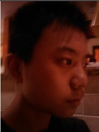
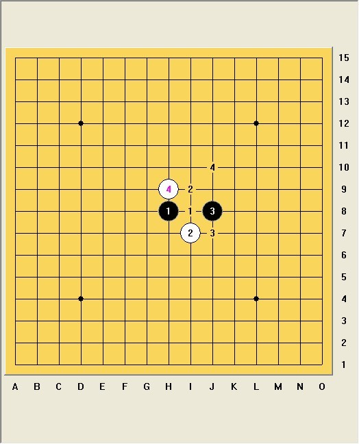
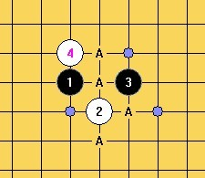
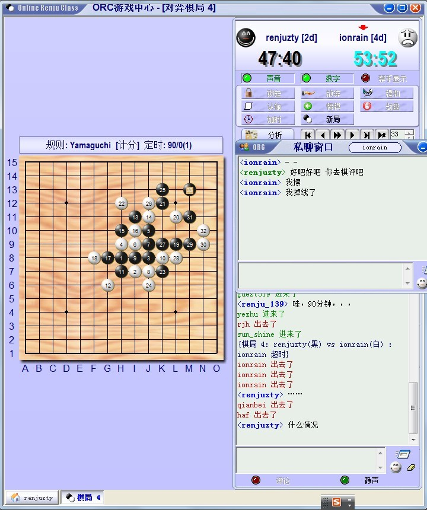
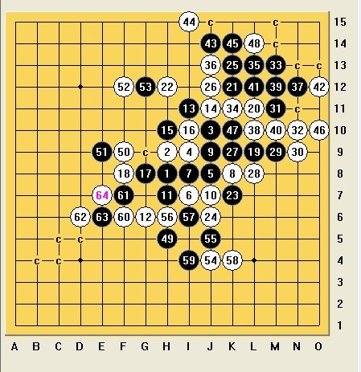
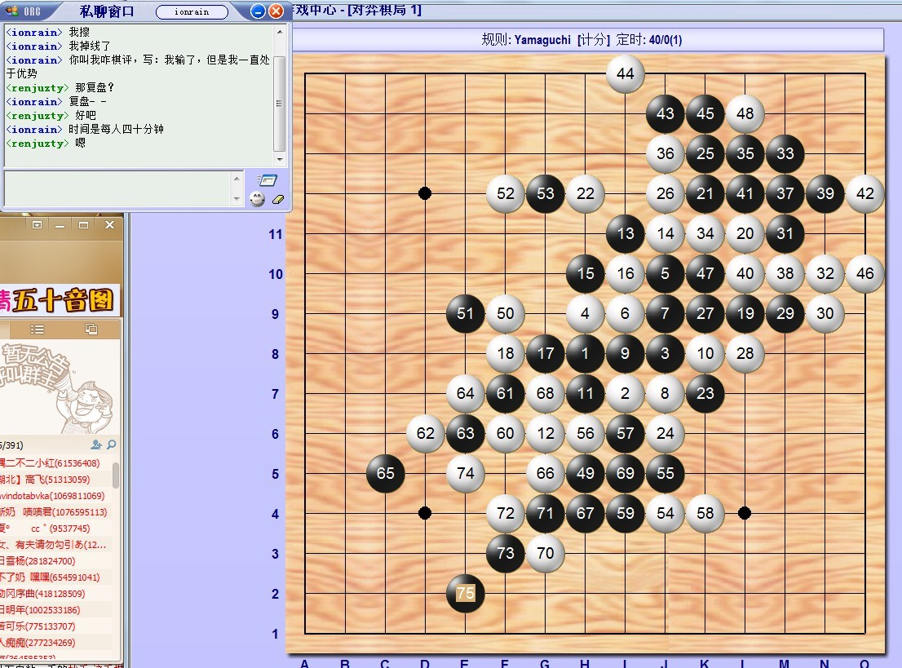

ORC 洛神（二段）VS离子阵阵雨（四段）棋评
#1 ORC 洛神（二段）VS离子阵阵雨（四段）棋评 作者：超级天逸超人 发表时间：2013-8-7 13:18:04
ORC 炫飞☆洛❤神（二段）VS离子阵阵雨（四段） の 棋评
第一章 离子の出场
他，曾是2011年全国少年儿童五子棋锦标赛冠军；
他，曾是五子棋贴吧的吧主；
他，现已是中国棋院认可的职业四段；
你们来猜猜看，“他”是谁?
场下一片哗然，离子-离子-我爱你！阿弥陀佛保佑你！
对，亲们，“他”就是我们本期的嘉宾——离子阵阵雨同学，我们用热烈的掌声欢迎他！
啪啪啪~叮~当~啪啪~啪~噗~呲啪~啪啪~啪啪啪~啪~
掌声还不够热烈！离子他不出来！
啪啪啪~叮~当~啪啪~啪~噗~呲啪~啪啪~啪啪啪~啪~啪啪啪~叮~当~啪啪~
啪~噗~呲啪~啪啪~啪啪啪~啪~啪啪啪~叮~当~啪啪~啪~噗~呲啪~
啪啪~啪啪啪~啪~啪啪啪~叮~当~啪啪~啪~噗~呲啪~啪啪~啪啪啪~啪
~啪啪啪~叮~当~啪啪~啪~噗~呲啪~啪啪~啪啪啪~啪~！
下面 欢迎我们本期的嘉宾李震雨先生闪亮登场！
：“我不管算老几都改变不了我比你强，你比我菜，我说你比你对家更菜是正确的事实！不管我算老几，既然比你强，就有资格说你才！”
听呀、看呀！离子老师的一席话令我们匪夷所思？不不，是受益匪浅！值得我们深思。
第二章 炫飞の洛神
大家好！我叫朱天逸，棋友们通常喜欢叫我天逸。而因为我酷爱打三国杀和英雄杀，所以给自己起了一个富有诗意的名字——洛❤神，而我的“守护神”哥哥的名字中也带有一个“洛”字，因此这是我名为洛神的第二个原因了。
我喜欢下五子棋，为此也拿过不少证书、奖状、奖杯、奖牌。但这些还远远不够！因为都是青少年年龄段的比赛。我相信！在我前方会有更加崎岖、艰辛而坎坷的路等着我走，请见证我进步的点点滴滴，去创造属于我辉煌的历史吧！
---------------------------------------------------------------------------------------------------------------
第三章 命运の对弈
下面我来介绍一下双方棋手的个人信息吧！
棋手1.
姓名：李震雨
性别：男
段级位：4段
出生于：1994年9月28日
卒于：不详
棋手2.
姓名：朱天逸
性别：男
段级位：2段
出生于：1994年9月28日
卒于：不详
两位无知少年刚刚经历了人生的一大转折——高考的磨练，各自找到了属于自己放飞梦想的桥梁，是呀！他们同年同月同日生，却又有着相同的爱好，五子棋、美术，是他们共同的交集，多么的机缘与巧合又有着如此奇特的默契。是命运的安排还是造化的弄人？是朋友的羁绊还是各自的宿命？敬请关注我后续的棋评，将在这里年度巨献《ORC 炫飞☆洛❤神（二段）VS离子阵阵雨（四段） の 棋评》 ，让我们跟着棋评走进两位少年内心的世界。
----------------------------------------------------------------------------------------------------------------
第四章 海市
与其说“海市”，不如说是“蜃楼”。我与离子阵阵雨间发生过许许多多一般人不曾发生过的梦境般的奇遇，如果不是五子棋，我想我俩也不会走到一起（咦，你们好像误会什么了,算了，我继续得瑟），如海市蜃楼一般遥不可及，但又似乎触手可及，真是一种矛盾的心理，大概只有像我这般的弱者才会有吧！
闲聊到此为止，下面切入正题。
----------------------------------------------------------------------------------
第五章 激战の开始
我先把对局前发生的故事告知大家。
三隅二不二小红(61536408) 2013-08-06 21:36:52
输的写棋评发贴吧
我师兄小红眼镜的一番话震慑到了我们，因此。。。。。。
 VS
你们来猜一猜会是哪一方胜出呢？
是由二段的洛神胜出，还是由四段的离子胜出？
谜底留到棋评完揭晓。
规则：Yamaguchi
开局方：炫飞☆洛❤神
开局名称：恒星
打点数：4
是否交换：否
执黑方：炫飞☆洛❤神
执白方：离子阵阵雨
时长：双方共180分钟 每人各90分钟 包干制
［对局前离子和我说，他要和我下疏星他执白让我攻，使我非常在意，第一感就是果断不和他下疏星！坚决不能给他白棋！嗯，对，就是这样！谁让白后盘好下呢，对吧！对吧！
于是我开了恒星想摆他一道，可谁知他的4手木有走最强4上，使我一时找不清楚打点，1、2、3点我很快就找到了，唯独第4打点不知道是哪个，有种迷惘的感觉，由于之前和黑白无常下过一次类似局面，还没来得急进行分析，就又出现相同的局面了，╮(╯▽╰)╭。于是依照之前的经验选择了图上的4。
事实上：
（1—1）
应该是这四个打点才对！（如图1-1）
因此也许会有种出师不利的感觉吧，毕竟刚第5手。
（1—2）
对弈时我忽略掉了这样的5之后竟然通回了疏星局（如图1—2），完全被反摆一道啊！原因你懂的！由于对弈时我是当做陌生局面处理的，于是算了3分钟最终走了J9，想来场激烈的对决。我承认我的机动性好弱，居然没有发现通回疏星去了，泪奔呀！
（1-3）
无论是a点还是b点，对白而言无疑都是好点！（如图1-3）
离子选择了b，哈哈也许这正符合像我们这样的2B小青年吧！
（1-4）
经过一系列的交换，到了这个局面，活完11这个三以后，我是很希望离子挡A的位置（如图1-4）。
（1-5）
因为我看到了这样的后续手段，（如图1-5）
感觉黑棋可以通过13手向下拓展空间，既虚挡了8-10的斜线同时又牵制住了它。
但实战离子的12并未挡上方，而是挡到了下方，其实12手我也认同挡下方好。
（1-6）
（如图1-6）我的13手思考了大概6、7分钟，其中考虑的点有三，其一为i11，其二k9,其三L9，我比较来比较去，觉得还是实战这个13比较稳妥，联系到了全盘，同时出现了G10这样的双杀好点！在离子思考的时间里，我算了一下白棋可下的点，大概也只有（1-6）上那三个白点可下了吧。
（1-7）
我努力的算呀算，发现15手还真没有什么太好的进攻手段，于是就目算这15以后的情况，感觉还是可战的局面，于是就下了。
(1-8)
17手冲四我下的很快（如图1-8），毕竟之前算很久了，头痛的是19手！
(1-9)
19手真心没有什么好的进攻手段，本着黑棋是天生的进攻方且不丢先的原则，我找到了这个19手！做了一个vct，同时防守住白棋的一条斜二，值了！
(1-10)
离子的20手使我惊诧，但又在情理之中（如图1-10）。这手21，我思考了将近7、8分钟，想试图找到一条通往vct之路，但是我没有找到，看来我天生不是当海贼王的料，哈哈！于是为了稳妥，走了这个21，试图看看白棋如何防守。
1-11）
离子回应了这个22手（如图1-11），和我的想法一致，压缩黑棋空间，自己占有外势。事实上，黑棋的23令我头痛，我不能像ando先生一样拥有犀利的进攻，又不能像高飞老师一样用黑棋去进行猥琐防，于是我心中萌发了这样一个想法：简单来说就是优势转移，使右上方黑棋的优势转移到下方甚至是左方来，这样就能保全不被白棋攻的满地跑。因为白棋现在一个活二、眠三都没有，因此借助这个23，未来会有L6等好点等待着我。
1-12）
正如离子所下（图1-12），在我下完23之后，我意识到了J6这手妙手，既封锁住黑棋未来能做的一步VCF，同时抢到了先手，使黑棋不敢轻易乱攻乱防！25手我考虑了好久好久。。。。。
1-13）
（如图1-13）25手我想了好久好久，如果我到下面防守，那其结果可想而知，螳臂当车！经过我一系列的思考，发现黑棋这样下隐藏了一套VCF（如图1-14）
（1-14）
当我下完这手27以后，离子自信满满的对我说：“你有VCF吗？”
此时我压抑的心情突然舒坦许多，“没有V，不不有v，你来挡我吧！”
也许离子当时真没有看到我的VCF（如图1-15），或许他看到只是在装糊涂？！
（1-15）
经过5分钟的思考，他似乎看到了VCF，于是走了这个28手（如图1-16）
1-17）
实战我先冲掉了29（如图1-17），然后让离子防。但事实上29=31欺骗性更强！
（如图1-18）
（1-18）
（1-19）
只有这个33可以一如既往的期待白棋出错，然后捡漏！
就在此时，戏剧性发生了！这也是网络五子棋的意外性！

（1-20）
我笑了，深深的笑了，离子他跑了，跑的是那么的自然，跑的是那么的巧合！正如（1-20）那样跑的多么开心呀！他输了，棋评该由他写！
他请求我复盘，我特么么且真心的想告诉他，运气也算实力的一部分的时候，一个念想让我改变了主意，为了棋评的质量，这盘棋也要完成！当时离子也和我说了：“如果让我写，我只能写我全盘优势，然后输了”，我转念一想，这多么辜负小红师兄对我们的期盼，我一咬牙一跺脚，复盘！复盘时我俩一人40分钟很快摆完前面，我默许他掉线逃跑了！
1-21）
当时的感觉就是这个33手白棋不好防！于是算来算去，发现白棋没几个点能走。
之前我有算过白34防k11之后我有一套VCT，行之有效！结果发现，只是捕风捉影，漏掉了一手防！
（1-22）
（如图1-22）当白棋下完这个34以后，我脑中就浮现出这样的画面，但是唯独漏掉了O10这个冲四，大概在39手时才意识到这个O10！
（1-23）
离子的48手一出（如图1-23），无疑宣布我攻崩了！知道真相的我眼泪掉下来！犹如当头一棒，不过也在情理之中，因为之前就已经知道了！我的优势转移计划彻底泡汤了，还被反将一军！不过我对自己的防守也比较有信心，但是白棋优势太大，此时有点心有余而力不足的感觉！
（1-24）
防守计划的第一步，干掉对我有危险的点，伺机发动反击（如图1-24）。
（1-25）
（如图1-25）50手削弱我一个活二白棋形成了一个眠三和一个活二，我想了想，51裸防封线路才是上策！而不是漫无目的的防守。
（1-26）
如图（1-26）黑棋始终没有能做出vcf的机会，其结果也只有死路一条吧，在离子多次让我劝降的情况下，我决定不见五不认输这种死皮赖脸的战斗方式支撑着我！因为我还没有见到五子连珠！
（1-27）
如图（1-27）相信看到这里，虽然有点对不起观众，我前面废话那么多，但是还是要说，白棋那么厚的外势真特么么的难防啊！估计大家和我的想法差不多吧，吾命休矣！

（1-28）
╮(╯▽╰)╭，难道这就是所谓亡命少年之路？！不行我还要挣扎！嗯，已经濒临死亡。
[/iwzq]
（1-29）
（如图1-29）啪啪啪，冲冲冲，莫非这就是所谓滴VCF么？
我们双方彼此心相系，啪啪啪，他冲一步我挡一步，基本上是秒下！
但是，棋盘上我已然挂掉了，但是棋盘外。。。咳咳，我还算有点经验。
因为人类的反射神经大概是0.2秒到0.5秒不等，
在那一秒，我心中萌发了这样一个想法：
哼！即便你四段大师，也是人啊！对。。。。。哇咔咔。。。。。你们懂了吧？！
（1-30）
（如图1-30）56手开始我们双方秒下，因此彼此拉紧对方的小手，勇往直前没有停歇，
因为我56手之后的想法只有一个，因为离子秒下，因为现在是他最放松的时候，有句俗话说的好“趁他病，要他命”，我是“伺机要他命呀！”就这样他很快下了72，我思考了半秒钟，果断下（如1-30）中的黑点冲四，之后就是大家喜闻乐见的场面了。吼吼！

我胜了！耶！我胜啦！啦啦啦啦！我是黑棋我胜啦！（如图1-31）
虽然胜之不武，但是我们只重视结果，其细节就不必追究啦！
谁让这场赌注本身就是以胜负来定的呢？！
（1-32）
我想遇到这种情况，即便是4段大师也只有抱怨的份了吧！
哈哈，你给我老老实实写棋评去吧你！
--------------------------------------------------------------------------------
第六章 神之一手
对局分析：
我想更深一层的认识应该是不该轻视对手，同时认真对待每一手棋，想要放松也要等到连五或者抓禁取胜
之后再放松，不应该还没有结束对局就已经进入休息状态吧！
其实我想说，白棋后盘外势太过强大，但凡有个1年以上棋力的人都会杀，虽然也并无不可取之处吧！但是我认为离子的进攻，无论是从空间感上还是从对线的认识上都与黄圣明、祁观、李一、曹冬、仇云飞等老师的思路相差甚远。希望我们彼此能够提高！
我需要批评自己一下：
1、为啥没找对5手？
2、机动性这么差？通回疏星都没意识到？！
3、即便通回疏星，为何忘谱了？
4、谨慎的我何时变得如此激进？
在如今全国赛变成山口规则之际，我们这些新一代的少年们也将步入山口规则的行列，去翱翔在我们未来棋盘上的天空，对我而言路漫漫兮修远，还有更加艰难的路等着我，我会坚强的走下去，谁让我们都爱五子棋呢！
在此之际，预祝世锦赛中 中国棋手们凯旋而归！
冬瓜老师、兰老师、黄修一老师、汪清清姐 加油哇！加油！
［此帖子已被 超级天逸超人 在 2013-8-7 14:21:25 编辑过］
［此帖子已被 超级天逸超人 在 2013-8-7 14:24:19 编辑过］
［ 簡單 于 2013-8-7 14:38:56 时奖励此帖[金币加 100 威望加1］
［ 暮雨迟同学于 2013-8-7 18:34:18 时花20金币送鲜花一朵］
［ 忧郁的双眼 于 2013-8-7 21:05:18 时奖励此帖[金币加 100 威望加1］
［ 佐小伊同学于 2013-8-8 9:57:25 时花20金币送鲜花一朵］
［ 佐小伊同学于 2013-8-8 9:57:25 时花20金币送鲜花一朵］
［ 佐小伊同学于 2013-8-8 9:57:25 时花20金币送鲜花一朵］
［ 佐小伊同学于 2013-8-8 9:57:25 时花20金币送鲜花一朵］
［ 佐小伊同学于 2013-8-8 9:57:25 时花20金币送鲜花一朵］
［ 佐小伊同学于 2013-8-8 9:57:25 时花20金币送鲜花一朵］
［ 佐小伊同学于 2013-8-8 9:57:25 时花20金币送鲜花一朵］
［ 佐小伊同学于 2013-8-8 9:57:25 时花20金币送鲜花一朵］
［ 佐小伊同学于 2013-8-8 9:57:25 时花20金币送鲜花一朵］
［ 雨一直下同学于 2013-8-8 12:12:13 时花20金币送鲜花一朵］
［ 雨一直下同学于 2013-8-8 12:12:13 时花20金币送鲜花一朵］
［ 雨一直下同学于 2013-8-8 12:12:13 时花20金币送鲜花一朵］
［ 雨一直下同学于 2013-8-8 12:12:13 时花20金币送鲜花一朵］
［ 雨一直下同学于 2013-8-8 12:12:13 时花20金币送鲜花一朵］
［ 雨一直下同学于 2013-8-8 12:12:13 时花20金币送鲜花一朵］
#2 Re:ORC 洛神（二段）VS离子阵阵雨（四段）棋评 作者：佐小伊 发表时间：2013-8-8 9:57:56
嗯 很长 下班再看0 0#3 Re:ORC 洛神（二段）VS离子阵阵雨（四段）棋评 作者：釣鱼岛岛主 发表时间：2013-8-8 15:17:07
同年同月同日生